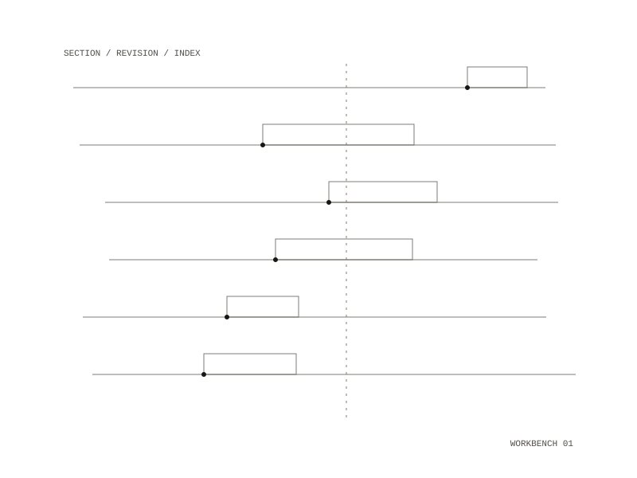

Palimpsest
Point it at a book — a folder of numbered Markdown sections — and it builds an editorial dossier in your browser: a color-coded reading copy you can edit and save, a parts board, a copyedit review, a back-of-book index, and the motifs you name. Then it exports the whole thing to PDF, Word, HTML, or Markdown.


The arrangement
Fully deterministic: no accounts, no network. Your writing never leaves your machine.
Everything the app uses — pandoc, XeLaTeX and its fonts, git — is baked into the image, so none
of it is installed on your computer. Your books live in ./workbench/ on your own disk;
the container is disposable and nothing is trapped inside it.
The demo
The live page is a single self-contained file: one recorded writing session replayed as notation and played back by a synthesizer, with the dials moving as it goes. It is generated from the app’s own Writing Record page. Sound on.
Docker, and optionally
justRuns at localhost:8137